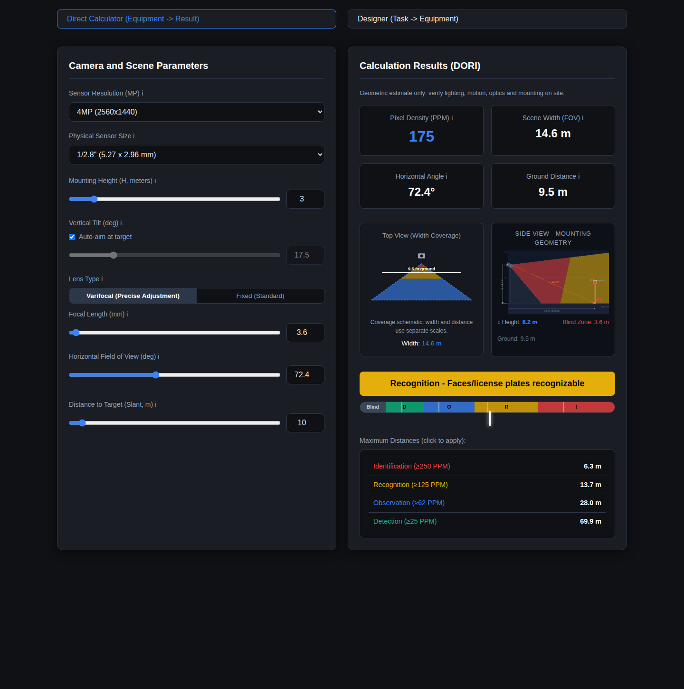

MyTwoBrain / UI5175: карта агентной инженерной системы
Диалог, документы, агенты и проверка результата — в одном рабочем контексте.
Собственный проект Фёдора Горбунова · обновлено 12 октября 2026.
Общее рабочее место человека и агентов
Действующий интерфейс, 12 октября 2026. Для показа выбран нейтральный фрагмент нашей работы над портфолио; внутренние идентификаторы сокращены в браузерном представлении. Нажмите, чтобы рассмотреть весь экран.
MyTwoBrain — среда для агентной разработки и ведения длительных задач.
Человек задаёт цель и принимает результат; агенты работают с документами,
кодом и инструментами в тех же границах задачи.
Harness — обвязка этой работы: история, контекст, роли, инструменты,
проверки и продолжение после перерыва. Её операторский интерфейс — UI5175.
Возможности и этапы развития указаны отдельно.
Слева — разговор и управление. Цель, история, ввод поручения, модель и глубина рассуждения остаются рядом.
Справа — предмет работы. Документ, Explorer с предпросмотром, план, перевод или доска открываются в том же рабочем месте.
Один объект — два способа проверки. Человек видит данные в UI, агент читает их через API, CLI и исходные файлы. Версия и результат должны совпадать.
В экскурсии можно переключить документ и вкладки, выбрать модель,
проверить учебный результат и увидеть, как изменение основания отменяет
прежнюю проверку. Макет объясняет взаимодействие; реальный интерфейс показан выше.
Показать собственную операторскую среду для управляемой агентной разработки и
провести по её рабочему маршруту: от цели и обследования процесса до проверяемого
артефакта, наблюдаемого runtime и передачи результата.
Пакет показывает не набор отдельных технологий, а целую инженерную среду:
удалённый сервер, CodexCLI/OZ, UI5175, память, документацию, агентские
процедуры, проверку результата, observability и ML/data-контур.
MyTwoBrain/UI5175 - собственная рабочая среда, в которой человек принимает
решения, подтверждает результат и выполняет внешние действия.
Материал подходит для технического разговора о рабочей среде,
агентной разработке и адаптации этих подходов под задачи команды.
Поставить задачу: цель человека, применимый контекст и ограниченный участок работы.
Выполнить: агентное действие и открываемый артефакт.
Проверить: AST, тесты, Agent-CI, наблюдаемость и доказательства.
Принять и продолжить: решение человека, передача результата, опыт и следующий шаг.
У работы есть понятная цель, ответственный, применимые источники и критерии
приёмки. После исполнения остаются открываемый результат и сведения о том,
что именно проверено. Человек может продолжить работу или передать её другому исполнителю.
Geometry проверяет только читаемость маршрутов, не готовность или безопасность продукта.
Проверяю маршруты…— связей— ошибок геометрии
Схема не отрисована. Исходная модель сохранена ниже.
Исходная модель и проверка
projection "Одно рабочее место — связанные возможности"
node human fact "Человек" "Цель, ограничения и решение о приёмке"
node workplace derived "Общий UI / API" "Диалог, сессии, терминал, предпросмотр, перевод, доска и Architecture Focus"
node agents annotation "Агенты и исполнение" "Профили, группы, оркестратор, mailbox, watchdog; skills, AWP, план и закладки"
node knowledge fact "Контекст и знания" "Wiki, онтология, тезаурус, документы, Librarian, память и AST"
node proof gate "Проверка результата" "Тесты, Agent-CI, Delivery Proof; журналы, метрики и traces"
node result annotation "Инженерный результат" "Код, документы, данные и receipts; приложения ML/data и Model Lab"
edge human -> workplace "цель"
edge workplace -> agents "роли"
edge workplace -> knowledge "поиск"
edge workplace -> proof "тесты"
edge agents -> result "артефакт"
edge knowledge -> result "основания"
edge proof -> result "проверки"
Источник: —. Это идентификатор модели, не подпись безопасности.
projection "Одно рабочее место — связанные возможности"
node human fact "Человек" "Цель, ограничения и решение о приёмке"
node workplace derived "Общий UI / API" "Диалог, сессии, терминал, предпросмотр, перевод, доска и Architecture Focus"
node agents annotation "Агенты и исполнение" "Профили, группы, оркестратор, mailbox, watchdog; skills, AWP, план и закладки"
node knowledge fact "Контекст и знания" "Wiki, онтология, тезаурус, документы, Librarian, память и AST"
node proof gate "Проверка результата" "Тесты, Agent-CI, Delivery Proof; журналы, метрики и traces"
node result annotation "Инженерный результат" "Код, документы, данные и receipts; приложения ML/data и Model Lab"
edge human -> workplace "цель"
edge workplace -> agents "роли"
edge workplace -> knowledge "поиск"
edge workplace -> proof "тесты"
edge agents -> result "артефакт"
edge knowledge -> result "основания"
edge proof -> result "проверки"
Наведите на узел или стрелку, чтобы проследить ближайшие связи. С клавиатуры
используйте Tab; Escape снимает выделение. Карта показывает связи возможностей,
а не последовательность сетевых вызовов. Размещение и назначение систем — ниже.
Основа исполнения: Tailscale, SSH / NoMachine и Ubuntu Server98;
systemd, Docker, Zellij и CodexCLI. AST связывает результат со структурой кода,
а память сохраняет проверенный опыт для следующей задачи.
2.2 Системы, назначение и владелец результата
Слой
Система
Назначение
Результат
Доступ
Ubuntu Server98
Основной host для проекта, сервисов и документов
Рабочая среда, на которой живут runtime и SSoT файлов
Доступ
Tailscale
Частный overlay-доступ между рабочими устройствами и сервером
Достижимость сервера без публичного port forwarding
Доступ
SSH / NoMachine
Текстовый и графический operator access
Подключение, диагностика и визуальная работа с сервером
Host lifecycle
systemd / Docker
Владение долгоживущими сервисами, контейнерами и restart policy
Управляемый runtime вместо ручного запуска в терминале
Execution
Zellij
Persistent terminal workspace для агентной сессии
Сессия переживает разрыв браузера и attach-соединения
Execution
CodexCLI
Фактический цикл reasoning, tool use, editing и verification
Rollout и изменения в рабочем дереве
Session control
OZ
Обвязка CodexCLI: запуск, resume, metadata, logs и lifecycle
Связанная OZ-сессия с plan, notes, bookmarks и evidence
Operator surface
UI5175
Общая точка наблюдения и контролируемого управления
Оператор видит одну текущую картину и допустимые действия
Dialog
session_view.html?kind=dialog
Работа с одной сессией, её историей и текущей задачей
Диалог, AWP, план, статусы, next action и handoff
Runtime observer
Terminal V2
Лёгкий screen observer поверх Zellij
Снимок живого терминала и честное состояние runtime
Docs surface
Docs Explorer / Workbench
Навигация по документам и артефактам с предпросмотром
Связанный документ, изображение, PDF или HTML-артефакт
Collaboration
Session Board
Быстрый совместный набросок схемы рядом с диалогом
Session-scoped карта и сохранённые варианты
Architecture
Architecture Focus / C4
Фокус на текущем AppDescriptor-контуре и его связях
Read-only архитектурный маршрут и runtime overlay
Knowledge
Docs / Librarian / DOC Graph
Поиск канонического документа, связей и provenance
Ссылка на owner-документ, а не копия смысла
Memory
Zettelkasten / GoalMemory / situation
Кандидаты опыта и временная сборка применимого контекста
Reviewable memory artifacts с source refs и применимостью
Semantics
Ontology Wiki
Словарь понятий, отношений и границ ответственности
Семантический маршрут к owning document или registry
Connections
OpenBao / права операций / доставка сервисам
Хранение секретов отдельно от назначения подключения и правил использования
Разрешённая операция и её результат без раскрытия ключа в диалоге
Code intelligence
AST / symbol passports
Навигация по структуре кода и impact frontier
Symbols, imports, owners и затронутые области
Procedure
Skills / hooks / composition graph
SOP для повторяемых операций и соседних проверок
Bounded route и execution receipt
Coordination
Реестр / группы / оркестратор
Состав команды, назначение работ и проверка общего итога
У каждой части и результата есть ответственный
Delivery
Mailbox / watchdog
Адресная передача результата и уведомление владельца
Видно, что сохранено, доставлено, прочитано и принято
Quality
Agent-CI / Delivery Proof
Проверка зафиксированных границ, AST, тестов, сборки и evidence
Owner-bound verdict, repair chain и текущая proof-свежесть
Observability
Prometheus / Loki / Tempo / Grafana
Метрики, логи, traces и runtime diagnosis
Correlated evidence вместо одного зелёного индикатора
Data / ML
SCW / Monetochka / FLAPPING_WINGS_AI
Потоковые данные, ML-ready подготовка и Model Lab
Проверенный dataset, состояние контура, model run и operator view
2.3 Границы авторства
Главная инженерная дисциплина системы - не смешивать интерфейс, память и
источник истины.
Codex rollout JSONL хранит каноническую историю диалога.
dialog.log, history, UI и summary являются производными представлениями.
plan.json хранит session-wide план; Active Work Package (AWP) описывает
текущий ограниченный work slice.
Source files, tests, contracts, authored docs, registries и runtime владеют
своими смыслами.
AST служит навигацией и evidence impact, но не заменяет исходники и тесты.
UI5175 связывает слои и показывает их оператору, но не становится вторым SSoT.
Graph, vector index, SQLite, JSONL и UI-проекции ускоряют чтение, но не
получают права самостоятельно менять значение сущностей.
Tailscale для приватного удалённого доступа; SSH и NoMachine для разных
рабочих сценариев.
systemd владеет сервисным lifecycle; Docker используется для изолированных
runtime и лабораторных контуров.
Zellij удерживает живую терминальную сессию независимо от браузера и
временного сетевого подключения.
UI5175 работает как HTTP operator/control plane, а терминал остаётся отдельной
поверхностью.
3.2 Application и automation stack
Codex CLI как основной цикл исполнения: чтение контекста, инструменты,
изменения и проверка. Версия установленного CLI меняется отдельно от концепции Harness.
Python для backend, automation, validators, data pipelines и operational
probes.
TypeScript/JavaScript и React/Vite-поверхности для UI5175 и связанных
операторских экранов.
Git, content hashes, JSON/JSONL, SQLite и filesystem-first artifacts для
истории, индексов, receipts и восстановимых материалов.
MCP применяется там, где нужен stateful/shared runtime; CLI и skill подходят
для короткого воспроизводимого пути с низкой стоимостью контекста.
3.3 Инженерные контракты
Для каждого существенного изменения задаются:
goal и non_goals;
факты, зависимости и owned paths;
acceptance criteria;
evidence plan и stop conditions;
результат, receipt и handoff.
Это превращает «попросить агента что-то сделать» в управляемый процесс. При
изменении upstream-артефакта старый downstream gate становится stale, а не
остаётся ложным green. Повторяется только затронутая ветка.
3.4 Доказательная инженерия
Шаг
Что связывает результат с исходной задачей
Постановка и маршрут
Версия AWP, квитанция выбора маршрута и квитанции этапов
Артефакт
Точная версия полученного материала
Проверка
AST, тесты, Agent-CI и итоговый gate
Наблюдение
UI / API / CLI показывают тот же проверенный объект
Проверка относится к определённым файлам и версии результата. При изменении
основания она теряет актуальность. Успешный тест, Agent-CI, публикация,
работающий интерфейс и приёмка человеком подтверждают разные этапы работы.
Их связь можно проследить на выполненном примере DORI.
Человек подключает сервис один раз. Агенты и приложения используют его
по назначению, в пределах выданных прав.
Слой связывает имя подключения с его назначением, разрешёнными действиями
и потребителями. Для хранения секретов выбран OpenBao. Приведённая схема
описывает устройство продукта; перенос существующих подключений идёт поэтапно.
Связи и роли
Выделите узел или стрелку: мышью, Tab или касанием. Escape сбрасывает фокус.
Проследить одну связь
Что: направление, подпись и концы связи. Фокус выделяет ближайшие связи;
остальной контекст приглушается. Пунктир означает обратную связь.
Зачем: понять роль компонента и путь результата.
Источник: модель в каноническом Markdown этой карты. Расположение — проекция.
Geometry проверяет только читаемость маршрутов, не готовность или безопасность продукта.
Проверяю маршруты…— связей— ошибок геометрии
Схема не отрисована. Исходная модель сохранена ниже.
Исходная модель и проверка
projection "1 · Человек подключает сервис"
node human fact "Человек" "Называет подключение, задаёт назначение и вводит секрет"
node vault annotation "OpenBao" "Хранит значение, версии и правила доступа к секрету"
node card fact "Карточка подключения" "Имя, назначение, владелец, права, потребители; ссылка на секрет без значения"
node observer derived "Общий UI / API" "Имя подключения, заполненность, проверки и версии; без раскрытия значения"
edge human -> vault "секрет"
edge human -> card "назначение"
edge vault -> observer "версия"
edge card -> observer "каталог"
Источник: —. Это идентификатор модели, не подпись безопасности.
projection "1 · Человек подключает сервис"
node human fact "Человек" "Называет подключение, задаёт назначение и вводит секрет"
node vault annotation "OpenBao" "Хранит значение, версии и правила доступа к секрету"
node card fact "Карточка подключения" "Имя, назначение, владелец, права, потребители; ссылка на секрет без значения"
node observer derived "Общий UI / API" "Имя подключения, заполненность, проверки и версии; без раскрытия значения"
edge human -> vault "секрет"
edge human -> card "назначение"
edge vault -> observer "версия"
edge card -> observer "каталог"
Связи и роли
Выделите узел или стрелку: мышью, Tab или касанием. Escape сбрасывает фокус.
Проследить одну связь
Что: направление, подпись и концы связи. Фокус выделяет ближайшие связи;
остальной контекст приглушается. Пунктир означает обратную связь.
Зачем: понять роль компонента и путь результата.
Источник: модель в каноническом Markdown этой карты. Расположение — проекция.
Geometry проверяет только читаемость маршрутов, не готовность или безопасность продукта.
Проверяю маршруты…— связей— ошибок геометрии
Схема не отрисована. Исходная модель сохранена ниже.
Исходная модель и проверка
projection "2 · Агент использует разрешённую операцию"
node agent derived "Агент" "Знает имя подключения и доступные операции; самого секрета не получает"
node policy gate "Проверка полномочий" "Назначение и права из карточки; проверка действия, ресурса и потребителя"
node vault annotation "OpenBao" "Доступ по выданным правам; credential только доверенному исполнению"
node service annotation "Шлюз / доверенный сервис" "Исполняет разрешённое действие с credential; секрет остаётся внутри доверенного исполнения"
node result derived "Результат агенту" "Данные или отказ, без выдачи credential в контекст модели"
node observer derived "Общий UI / API" "Список, заполненность, проверки, версии, ошибки и журнал операций"
edge agent -> policy "операция"
edge policy -> vault "права сервиса"
edge vault -> service "credential"
edge service -> result "ответ"
edge service -> observer "состояние"
Источник: —. Это идентификатор модели, не подпись безопасности.
projection "2 · Агент использует разрешённую операцию"
node agent derived "Агент" "Знает имя подключения и доступные операции; самого секрета не получает"
node policy gate "Проверка полномочий" "Назначение и права из карточки; проверка действия, ресурса и потребителя"
node vault annotation "OpenBao" "Доступ по выданным правам; credential только доверенному исполнению"
node service annotation "Шлюз / доверенный сервис" "Исполняет разрешённое действие с credential; секрет остаётся внутри доверенного исполнения"
node result derived "Результат агенту" "Данные или отказ, без выдачи credential в контекст модели"
node observer derived "Общий UI / API" "Список, заполненность, проверки, версии, ошибки и журнал операций"
edge agent -> policy "операция"
edge policy -> vault "права сервиса"
edge vault -> service "credential"
edge service -> result "ответ"
edge service -> observer "состояние"
Стрелки показывают модель доступа. Секрет поступает в доверенное исполнение;
агенту возвращается результат операции. Подписи и цвет различают источник,
обработку и проверку полномочий. Это архитектурная модель, не отчёт о завершении миграции.
Что хранится и кто использует
Часть слоя
Назначение
Карточка подключения
Имя, бизнес-назначение, владелец, разрешённые действия и потребители. Содержит ссылку на секрет, без его значения.
OpenBao
Защищённое хранение значений, их версий и управление доступом к ним. Человек вводит или заменяет секрет через операторский интерфейс.
Политика доступа
Определяет, кто вправе выполнить конкретное действие над указанным ресурсом. Знание имени подключения не даёт прав.
Шлюз операций
Проверяет доступ, использует нужный секрет и возвращает агенту результат разрешённого вызова.
Доставка сервисам
Передаёт приложению только необходимые ему поля через согласованный адаптер, файл credentials или runtime-переменные.
Общая точка наблюдения
Показывает людям и агентам доступные метаданные одного подключения: назначение, проверки, версии и состояние потребителей.
Systemd и Docker запускают потребителей с выделенным для них доступом.
Способ доставки зависит от приложения; общий набор секретов всем процессам
не раздаётся. Доверенный сервис может прочитать собственные реквизиты — они
нужны ему для работы. Агентному интерфейсу доступны результаты и разрешённые
метаданные, без выдачи значений ключей.
Работа без постоянных ручных согласований
Обычные действия внутри выданных прав выполняются без подтверждения каждого
вызова. Новое назначение или расширение полномочий требует отдельного решения.
Лимиты внешнего сервиса и ожидание свободного ресурса отображаются с причиной.
Проверки отвечают на разные вопросы: заполнено ли подключение, подходит ли
учётная запись, достаточно ли прав, выполнилась ли нужная операция.
После замены секрета проверяется загрузка новой версии каждым потребителем.
Отзыв доступа и восстановление также входят в жизненный цикл подключения.
Граница доверия. Отсутствие ключа в контексте агента не отменяет контроль
его действий и получаемых данных. Хранилище на общем хосте не гарантирует
изоляцию от администратора с полными правами.
Какие данные получает модель
Ключ подключения и содержимое запроса — разные объекты защиты. Документ может
содержать персональные данные, переписку или внутренние сведения даже без API-ключа.
Для каждого внедрения определяются допустимые источники, состав передаваемого
контекста и разрешённый маршрут модели: внешний провайдер или локальный вывод.
Обезличивание, ограничения вывода и журналирование должны проверяться на
реальном пути операции. В этом разделе зафиксирован подход; полная изоляция
всех инструментов и материалов персонального окружения не заявляется.
Это основной фрагмент, который стоит показывать в техническом разговоре.
Цель человека: ограничения, бизнес-смысл и решение оператора.
Сборка контекста: действующие документы, онтология, применимый опыт,
затронутый код и текущее состояние исполнения.
Рабочий пакет: цель, исключения, факты, пути, зависимости, критерии
приёмки, план доказательств и условия остановки.
Маршрут и исполнение: skill, hook, CLI / MCP, CodexCLI,
ограниченный помощник или ручное действие.
Артефакт: код, документ, данные, тест, схема или отчёт с точной версией.
Техническая проверка: AST impact, целевые тесты, browser / API E2E,
Agent-CI, состояние исполнения и подтверждение доставки.
Приёмка человеком: сверка исходной цели, бизнес-результата, рисков и следующего шага.
Передача и опыт: воспроизводимый handoff, источники, история решений
и принятие опыта в подходящий слой памяти.
4.1 Общие знания и память
Понимать одинаково и продолжать с достигнутого. MyTwoBrain связывает
разговор, принятые договорённости, документы и накопленный опыт.
Человек и агент могут найти основание ответа: откуда он появился,
где закреплён и применим ли к текущей задаче.
Общий язык и основания решений
Компонент
Роль в работе
Wiki
Объясняет устройство системы и принятые способы работы. Помогает войти в тему без повторного пересказа проекта.
Онтология
Связывает устойчивые понятия, их отношения и владельцев. Ведёт к точному определению и действующему источнику.
Тезаурус
Сопоставляет названия, сокращения, русские и английские варианты с одним понятием. Помогает найти его разными словами.
Документы и договорённости
Фиксируют требования, решения и ограничения у ответственных за них владельцев. Дают основание для работы и проверки.
У каждого понятия и договора — свой источник истины. Повторное отображение
в Wiki, графе или интерфейсе не создаёт вторую редактируемую копию правила.
История, опыт и навигация
Память - это не один «граф мозга» и не текущий контекст модели.
Каждый слой отвечает на свой вопрос:
Слой
Вопрос
Статус
Rollout history
Что фактически было сказано и сделано?
Source truth
Goal / plan / AWP
Что выполняется сейчас и в каких границах?
Workflow truth
Authored docs / ADR / Registry
Каково принятое значение и правило?
Semantic truth
DOC Graph / Librarian
Где связанный документ, owner и provenance?
Retrieval projection
Zettelkasten
Какие атомарные идеи и паттерны могут пригодиться?
Candidate projection
GoalMemory / situation
Что нужно собрать для текущего resume или handoff?
Query-time orientation
AST / symbol passports
Где структура и impact в коде?
Code navigation evidence
Zettelkasten связывает отдельные наблюдения и идеи с источниками; это
кандидаты для дальнейшего применения. DOC Graph показывает связи документов,
а Librarian помогает найти действующего владельца и связанные материалы.
AST позволяет перейти к структуре кода и оценить затронутые части реализации.
Как опыт становится знанием
Связи и роли
Выделите узел или стрелку: мышью, Tab или касанием. Escape сбрасывает фокус.
Проследить одну связь
Что: направление, подпись и концы связи. Фокус выделяет ближайшие связи;
остальной контекст приглушается. Пунктир означает обратную связь.
Зачем: понять роль компонента и путь результата.
Источник: модель в каноническом Markdown этой карты. Расположение — проекция.
Geometry проверяет только читаемость маршрутов, не готовность или безопасность продукта.
Проверяю маршруты…— связей— ошибок геометрии
Схема не отрисована. Исходная модель сохранена ниже.
Исходная модель и проверка
projection "Опыт становится знанием после проверки"
node observation fact "Наблюдение" "Работа, источник и обстоятельства; не готовое правило"
node review gate "Проверка" "Повторы, противоречия, применимость и решение предметного владельца"
node knowledge fact "Принятое знание" "Документ, ADR или Registry у своего владельца"
node use derived "Следующая задача" "Применение знания и новые наблюдения"
edge observation -> review "источник"
edge review -> knowledge "принятие"
edge knowledge -> use "применение"
edge use -> knowledge "уточнение" feedback
Источник: —. Это идентификатор модели, не подпись безопасности.
projection "Опыт становится знанием после проверки"
node observation fact "Наблюдение" "Работа, источник и обстоятельства; не готовое правило"
node review gate "Проверка" "Повторы, противоречия, применимость и решение предметного владельца"
node knowledge fact "Принятое знание" "Документ, ADR или Registry у своего владельца"
node use derived "Следующая задача" "Применение знания и новые наблюдения"
edge observation -> review "источник"
edge review -> knowledge "принятие"
edge knowledge -> use "применение"
edge use -> knowledge "уточнение" feedback
Перед принятием проверяются повторы, противоречия и применимость.
Идея может остаться гипотезой, быть отклонена или отложена; прежнее решение —
заменено новым. История сохраняет ход работы, а в действующие знания попадает
проверенный опыт. При повторном использовании проверяется его актуальность.
Один пример: доступ на чтение
«Подключи агенту чтение данных, но запрети изменения».
Найти понятие. Тезаурус связывает слова «подключение», «доступ» и
connection с нужной темой и её терминами.
Понять границы. Wiki и Онтология объясняют различие между секретом,
подключением и разрешённым действием.
Установить правило. Документ подключения задаёт назначение,
потребителя и допустимые операции. Связанный опыт помогает учесть прошлые ошибки.
Выполнить действие. Разрешённый инструмент использует подключение через
слой безопасности и возвращает результат.
Проверить вместе. Человек в UI и агент через API сверяют результат
одной операции над одним подключением; полезный опыт проходит проверку
перед сохранением в знаниях.
Это пример связей между слоями, а не обязательный автоматический маршрут
для каждого запроса. Найденная заметка не выдаёт права доступа и не заменяет
действующий договор.
4.2 Агенты, группы и оркестратор
Постоянный агент ведёт длительную работу и имеет профиль: назначение,
роль, связь с сессией и выбранный режим исполнения. Группа объединяет
участников вокруг задачи. Её состав и руководитель видны человеку.
Оркестратор удерживает общий результат: разбирает задачу, определяет
зависимости, распределяет независимые части, проверяет возвращённые материалы
и доводит работу до общего итога. Он также может выполнить часть работы сам.
Для ограниченных независимых проверок могут привлекаться временные помощники:
code_mapper - ownership, entrypoints, invariants и impact;
docs_researcher - канонические документы и version-sensitive behavior;
browser_debugger - DOM, console, network и screenshot evidence;
reviewer - advisory review frozen diff без права выдавать final PASS.
Временный помощник возвращает результат назначившему его агенту. Постоянная
роль, сессия, состав группы и конкретная задача сохраняют разные значения.
Членство в группе само по себе не подтверждает занятость или выполнение поручения.
Параллельная подготовка и общий итог
Независимые части можно готовить одновременно в отдельных рабочих копиях.
В общий сервис готовые изменения вносятся согласованно: проверяются текущая
версия, результат предыдущего участника и совместимость нового изменения.
После объединения проверяется общий пользовательский сценарий.
План может вести web-агент или CLI-оркестратор. При передаче сохраняются
задача, критерии, полномочия и незавершённые действия. Ручной пилот,
договорённость о ролях и автоматическое управление имеют отдельные проверки зрелости.
4.3 Передача результата и уведомления
Mailbox сохраняет адресный результат для другого участника. Watchdog
напоминает владельцу о необходимости прочитать его. Получение уведомления,
чтение сообщения, подтверждение получения и приёмка работы различаются.
Этап
Что известно
Кто делает следующий шаг
Результат сохранён
Материал и адресат зафиксированы
Канал доставки уведомляет адресата
Адресат уведомлён
Сигнал передан
Адресат открывает свой mailbox
Результат прочитан
Получатель ознакомился
Получатель подтверждает получение и оценивает материал
Работа принята
Ответственный сверил критерии и доказательства
Оркестратор объединяет результат или задаёт следующий шаг
Если адресат недоступен, остаются сообщение, причина ожидания и следующее
действие. Уведомление не запускает новую цель и не возобновляет задачу,
которую человек поставил на паузу.
4.4 Модели, профили и инструменты
Роль отвечает за назначение агента. Модель и глубина рассуждения определяют
способ обработки задачи; права операций задаются отдельно. Настройки в
профиле, фактически запущенный процесс и доступность провайдера проверяются раздельно.
Часть
Для чего нужна
Skills
Повторяемые процедуры: что прочитать, как выполнить действие и проверить результат
Plugins
Упаковка связанных инструкций и возможностей
API / CLI / MCP
Конкретные операции с документами, сервисами и инструментами
Контекст проекта
Действующие требования, термины, источники и ограничения задачи
Модель и reasoning
Выбор доступного вычислительного режима под сложность работы
Квоты и бюджет
Причина ограничения, доступный маршрут и решение о продолжении
Codex CLI исполняет агентный цикл; CLIProxyAPI связывает его с выбранным
провайдером. Локальная модель требует совместимой интеграции и проверки
инструментальных вызовов. Одно название в списке не доказывает готовность маршрута.
Учёт расхода помогает выбирать режим; точный срок и стоимость произвольной
задачи заранее не гарантируются.
Диалог связывает задачу с историей, документами, исполнителями и проверкой.
Открытый справа материал можно обсуждать слева, сохраняя оба представления перед глазами.
Функция
Как это реализовано в Диалоге
Практическая ценность
Карточка записи
Session identity, owner, cwd/repository, runtime presence, текущая цель и статус
Быстро понятно, с каким кейсом работаем
История взаимодействия
Канонический rollout, dialog/history и curated notes
Не теряется решение и видно, откуда взялся вывод
Воронка статусов
Plan items, AWP state, open / in_progress / completed, operator_needed, blocked, stale
Видно, что сделано, что ждёт решения и где остановка обоснована
Следующее действие
Acceptance, evidence plan, bookmarks, next action и stop conditions
Сессия не превращается в бесконечный разговор
Прикреплённые материалы
Links to docs, source paths, artifacts, screenshots, receipts и tests
Контекст задачи связан с проверяемыми объектами
Activity trail
Последовательность prompts, решений оператора, route receipts, proof и handoff
Можно восстановить ход работы без пересказа по памяти
Контроль качества
AST/Agent-CI/Delivery Proof и текущая свежесть gate
Отделяется «агент сказал» от «кандидат проверен»
Статус исполнения
Runtime observer, Terminal V2, logs, metrics и traces
Видно, агент работает, ждёт ввода, завершился или недоступен
Работа с рисками
Operator-needed, fail-closed states, stale proof, reason/action и recovery boundary
Не маскируется неопределённость и не происходит скрытое продолжение
Завершение кейса
Handoff package, receipts, accepted artifact и promotion decision
Результат можно передать человеку или следующей сессии
Главное отличие от обычного чата: Диалог - это не одна лента сообщений, а точка
связывания intent -> context -> action -> evidence -> acceptance.
При этом UI не переписывает историю и не становится владельцем документов,
памяти, CI или runtime.
5.1 Точки взаимодействия UI5175
Точка
Что можно сделать
Что получает оператор
Диалог
Поставить цель, собрать контекст, выбрать модель и уровень reasoning, запустить действие и принять результат
Управляемый путь от запроса до handoff без разрыва между разговором и работой
CLI-функции в UI
Использовать основные функции Codex/OZ из интерфейса, не переключаясь постоянно в терминал
Один операторский маршрут для запуска, продолжения, планирования и проверки
Terminal V2
Наблюдать bound runtime, отправлять ввод в привязанный Zellij pane и при необходимости работать с tmux внутри терминального контура
Доступ к живой сессии и её screen snapshot с сохранением отдельного observer path
Закладки
Отмечать фрагмент диалога, добавлять заметку, прикреплять evidence и передавать ветку в чат или план
Локальная память по ходу работы, которая не теряется в длинной истории
Переводчик и Translation Explorer
Переводить ответ агента или документ, выбирать prompt/model, открывать сохранённые варианты и повторять перевод
Управляемый перевод с видимыми моделью, prompt и происхождением результата
Локальная терминология
Подхватывать доменные слова из диалогов и переводческих заметок, связывать их с glossary и semantic layer
Повторяемый словарь проекта вместо случайного перевода терминов
Docs Explorer
Открывать Markdown, PDF, JPG/PNG, HTML и другие артефакты; переходить от исходного документа к результату
Быстрый просмотр материалов, CV, отчётов, скриншотов и приложенных примеров
Session Board
Совместно рисовать карту, раскладывать связи и сохранять варианты рядом с текущим диалогом
Визуальная карта рабочей задачи без подмены канонической draw.io-доски
Architecture Focus
Открывать C4/LikeC4-фокус по AppDescriptor и видеть связи, source freshness и runtime health
Быстрый ответ на вопрос «где находится этот контур и что с ним происходит»
История и поиск
Искать по полной истории rollout отдельно от текущего терминала и переходить к найденному сообщению
Восстановление решений и фактов без ручного пролистывания сессии
Runtime state
Видеть состояния выключен, активен, работает, нужно вручную, ошибка и завершение; получать operator attention для HITL, ошибок и финала
Понятно, выполняется ли работа, требуется ли решение или результат уже готов
Документы, отчёты и QA
Формировать отчётные артефакты, проверять текст, подключать CAD/draw.io-контуры через соответствующие инструменты и навыки
Результат выходит в форме, которую можно открыть, проверить и передать дальше
Model/provider contour
Управлять моделью и reasoning через UI; текущий подписочный путь идёт через CLIProxyAPI, а в тот же контур можно подключить локальную модель
Возможность менять вычислительный маршрут без перестройки рабочего процесса
Именно эта связка делает UI5175 рабочим cockpit: Диалог задаёт движение,
Терминал показывает живой runtime, Закладки удерживают локальные решения,
Explorer открывает артефакты, Board и Focus показывают структуру, а observer и
уведомления возвращают оператору состояние исполнения.
Observability нужен не для декоративного dashboard, а чтобы различать:
агент действительно выполняет задачу;
процесс ожидает действия оператора;
браузер потерял attach, но persistent runtime продолжает работу;
runtime остановился;
delivery или provider path недоступен;
результат есть, но proof устарел.
Зафиксированный O1 canary включал:
Prometheus для метрик;
Alertmanager для lifecycle alert semantics;
Loki для логов;
Tempo для traces;
Alloy для сбора;
Grafana для глубокого telemetry view;
UI5175 /observe.html как общий operator entry point.
Перечень отражает построенный наблюдательный контур и ранний проверочный
срез. Текущая доступность компонентов и внешняя доставка уведомлений читаются
у их владельцев. Снимок панели или прошлая успешная проверка не подтверждают
непрерывную работоспособность всех сервисов.
Продолжение, восстановление и архив
После перерыва собираются текущая задача, план, принятые решения и следующий
шаг. Полная история сохраняет факты разговора; краткое резюме помогает найти
нужный контекст. Перед повтором внешнего действия сверяется, произошло ли оно уже.
Перезапуск процесса, пересоздание сессии и архив — разные операции.
Перезапуск сохраняет её идентичность; пересоздание связывает новую сессию
с прежней историей и профилем. Архив удерживает необходимый смысл завершённой работы.
Восстановление документов, данных и доступа проверяется у соответствующих владельцев.
Состояние «неизвестно» остаётся видимым. Автозапуск отдельного агента
не является доказательством восстановления всей системы после холодного старта.
ML в этом пакете - не обещание конкретной точности модели. Готовый опыт состоит
в построении и эксплуатации прикладного data/ML-контура, где качество данных,
полнота временного ряда и воспроизводимость важнее красивого названия модели.
7.1 Карта ML-контура
Этап
Инструменты и результат
Приём и обработка
Binance WebSocket / REST, SCW stream processing, Redis hot data
Поиск, калибровка и тест; MLflow, TensorBoard и Model Lab
Наблюдение
Предметный UI и подтверждения состояния для оператора
7.2 Что именно сделано инженерно
Спроектирован поток обработки временных рядов и market data.
Разделены canonical result и ML-ready projection.
Материализована подготовка данных в Parquet для повторяемых ML-итераций.
Введены проверки временной полноты, дублей, пропусков, parity и market
identity.
Описаны восстановление ML-ready данных, backfill, retention и правила
остановки потока при повреждённом входе.
Использовались Python, Redis, MongoDB, Docker ML runtime, Parquet и MLflow.
Для model discovery и inference применялись PyCaret и LightGBM в пределах
соответствующего исследовательского/прикладного контура.
Model Lab связывает train, calibrate и test с operator-visible результатом.
7.3 Связь с агентной разработкой
ML-контур показывает тот же инженерный стиль, что и UI5175:
у каждого слоя есть владелец и жизненный цикл;
данные не считаются пригодными только потому, что поток не завершился ошибкой;
gap или mismatch блокирует дальнейший шаг до восстановления;
результат имеет evidence, config и reproducible artifact;
UI, API, storage и проверки должны согласовывать одну идентичность ряда.
Не следует заявлять без отдельного отчёта метрики качества моделей, production
ROI или универсальную predictive accuracy.
7.4 DORI как пример быстрой прикладной реализации
В пакет приложен DORI Camera Selector / Designer -
автономный однофайловый HTML-инструмент, собранный как отдельный практический
пример с агентским рабочим процессом.
В нём два режима:
Direct Calculator: оборудование -> расчётный результат;
Designer: задача и геометрия -> требования к оборудованию.
Пример показывает полный короткий цикл прикладной реализации:
Задача и входы: предметная потребность, параметры и ограничения.
Инструмент учитывает разрешение, размер сенсора, фокусное расстояние, высоту
монтажа, наклон, целевую дистанцию, blind zone и геометрию установки. Это
хороший малый пример того, как из конкретного запроса быстро получить
работающий интерфейс с расчётом и визуальным подтверждением результата.
DORI-файл не входит в private core MyTwoBrain и приложен именно как
самостоятельный пример реализации задачи.
12 октября мы проверили, как калькулятор подбирает объектив при изменении
дистанции. Основная зависимость уже работала правильно. Проверка выявила
соседние ошибки ввода и рекомендации оборудования, которые требовали исправления.
Шаг
Что сделано
Открываемое подтверждение
Поставить задачу
Проверить дистанцию, расчёт и рекомендации; сохранить два режима инструмента
Direct Calculator и Designer в работающем примере
Сверить предметную модель
При неизменных ширине и требуемой плотности число пикселей остаётся тем же; фокусное расстояние меняется
Изменение дистанции в Designer
Исправить найденное
Убраны NaN и скрытые подстановки; уточнены дистанции и допустимость стандартного комплекта
Явная ошибка ввода и обновляемая рекомендация
Проверить
Выполнены 36 браузерных проверок DORI локально и 36 на опубликованной версии; источник прошёл Agent-CI
Проверяемые режимы и воспроизводимые входные значения ниже
Доставить
Опубликован один согласованный HTML; действующие представления сверены по хешам
Попробуйте сами. В Designer задайте дистанцию 150 м, высоту 3 м,
ширину участка 8,5 м и требуемую плотность 150 px/m. Минимум — 1275 пикселей
по ширине; для сенсора 5,27 мм расчётное фокусное расстояние около 93 мм.
Уменьшите дистанцию: фокусное расстояние изменится, а минимум пикселей сохранится.
Пустое обязательное поле должно отменять расчёт и показывать причину.

Результат можно открыть и проверить вводом собственных параметров. Геометрическая схема помогает понять расчёт; испытания физической камеры и сертификация сюда не входят.
Этот случай связывает предметную задачу, работу агента, проверки и доставку
в понятный результат. Время разработки, экономия и коммерческий эффект здесь не оцениваются.
Используются в собственной работе; реальный интерфейс показан в начале
Реестр, профили и группы агентов
Реализована ручная основа; текущее состояние сессии проверяется отдельно
Оркестрация и передача результата
Применяются договорённости о ролях и инструменты доставки; непрерывная автономность всей команды не заявляется
Wiki / Онтология / Тезаурус
Действующие смысловые входы; память и источники сохраняют своих владельцев
OpenBao и применение подключения
Выбранная архитектура; перенос и проверка потребителей идут поэтапно
AST, тесты и Agent-CI
Применяются к конкретному изменению; зрелость не равна одному общему зелёному статусу
Наблюдение и восстановление
Есть отдельные механизмы и проверки; полный холодный старт всех агентов требует собственного доказательства
Локальный inference
Вариант совместимой интеграции; готовность подтверждается на выбранной модели и сценарии
Экономический эффект
Коммерческие KPI и окупаемость не подтверждены этим портфолио
Что можно сделать вместе
Эта работа показывает опыт связывания агентного исполнения, интерфейса,
документов, данных и проверок. Его можно применить к конкретному процессу команды:
разбору документов, подготовке отчётов, разработке внутренних инструментов
или контролю длительных инженерных задач.
Практичный первый результат — один пилот: известные источники данных,
ограниченный сценарий, рабочий интерфейс и критерии приёмки. Команда получает
открываемый инструмент или отчёт, понятный порядок работы и проверку результата.
После пилота определяется, что переносить в постоянную эксплуатацию.
MyTwoBrain используется как собственное окружение автора. Доступы,
интеграции, размещение данных и сопровождение для другой организации
согласуются под её условия. Для строительного процесса есть
C1 «Факт → Решение»: чертёж, 3D,
объёмы, график и выходной пакет решения.
Для обсуждения достаточно задачи, примера исходных материалов и описания
результата, который человек должен получить и принять.
Описание основано на текущих документах Harness, принятой терминологии,
выполненных проверках и собственных прикладных работах. При переносе в другую
команду проверяются её данные, полномочия, инструменты и критерии результата.
Уникальность: описан один собственный Harness/UI5175-контур, а не
абстрактный «универсальный AI-продукт».
Релевантность: карта привязана к agent development, automation, QA,
runtime, data/ML и передаче результата.
Структурированность: сеть, runtime, UI, memory, engineering proof,
observability и ML разделены по слоям.
Полнота: раскрыты рабочее место, роли, знания, подключения, исполнение,
проверки и прикладные результаты. Концепции и ограничения показаны отдельно;
полнота конкретного внедрения проверяется на его сценариях.
Консистентность: AST не назван памятью, UI5175 не назван SSoT документов,
Session Board не назван канонической draw.io-доской, а Ontology Wiki отделён
от операторского портала.